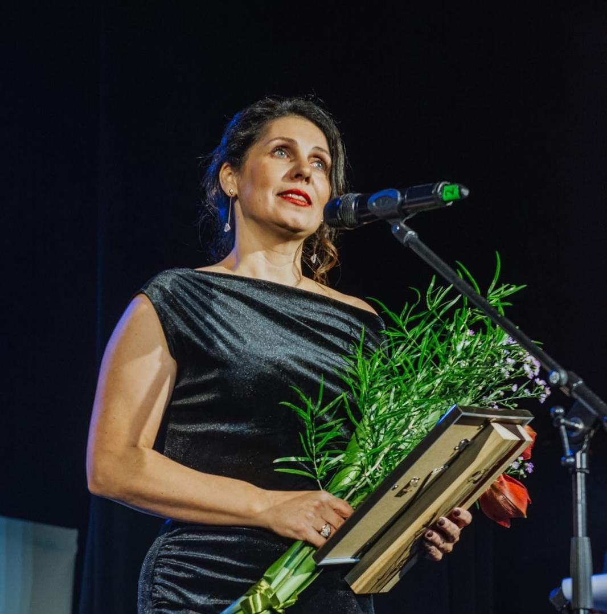

"Skolotājs ir diagnoze."
Strādā Siguldas pilsētas vidusskolā no 2011.gada
Intervētāja Katrīna Mesle
Cik gadus Jūs strādājat par skolotāju?
26 pilnus, gandrīz 27 gadus.
Kā Jūs izvēlējāties kļūt par skolotāju?
Par skolotāju es kļuvu nejauši. Es izvēlējos kļūt par skolotāju… īstenībā droši vien nemaz ļoti neizvēlējos. Tas laikam ir gēnos, jo manā ģimenē ir ļoti daudz skolotāju. Otrs iemesls bija tas, ka man vajadzēja atskaitīties direktoram, kur gribu iet mācīties, un tā bija augstskola, kur neviens no skolotājiem man nevarēja piesieties. Tur es aizgāju, iestājos kā trešā labākā un tiku iekšā. Tad nekur citur vairs nemēģināju. Bet neko nenožēloju.
Kas tā bija par skolu?
Rīgas Pedagoģijas un izglītības vadības augstskola. Pats labākais bija tas, ka tur maijā varēja kārtot iestājeksāmenus. Es vēl nebiju beigusi vidusskolu, bet jau biju iestājusies augstskolā.
Vai šī bija Jūsu pirmā karjeras izvēle?
Es sapņoju kļūt par žurnālisti. Pat gāju mācīties dažādos kursos, bet nesanāca.
Kādus mācību priekšmetus un klases Jūs mācāt?
Latviešu valodu un literatūru 7. - 9. klasēm. Vidusskolā mācu kultūras menedžmentu un pasākumu menedžmentu.
Vai esat strādājusi arī citās skolās?
Īstenībā nē. Visu laiku strādāju vienā un tajā pašā skolā, tikai nosaukumi mainījās. Sākumā tā bija Siguldas 3. pamatskola, vēlāk kļuva par Siguldas pilsētas vidusskolu.
Kādi bija Jūsu pirmie gadi skolā?
Ļoti jauki, protams, arī bailīgi, jo man bija tikai 20 gadi, kad sāku strādāt skolā. Es neko daudz nezināju, tikai tik, cik pati atcerējos no savas skolas pieredzes. Man bija burvīga audzināmā klase — trešā klase. Bērni bija ļoti forši, bet vecāki mani vienkārši lutināja — dāvināja dāvanas, rūpējās par mani kā par mazu bērnu. Man viss bija brīnišķīgi.
Kas bija visgrūtākais, uzsākot darbu?
Visgrūtākais bija tas, ka es neko nesapratu, un arī augstskolā to neiemācīja. Piemēram, kā aizpildīt žurnālu. Tajā laikā nebija e-klases — bija papīra žurnāli. Ko tur rakstīt? Kā rakstīt stundu tēmas? Tīri dokumentācijas lietas. Man ļoti palīdzēja kolēģe Ineta Stepanova, kura joprojām strādā mūsu skolā.
Kas palīdzēja Jums pierast pie skolotāja darba?
Man īsti nebija jāpierod. Es principā pabeidzu vidusskolu, mazliet pamācījos augstskolā un atgriezos atpakaļ skolā.
Kā Jūs esat attīstījusies kā skolotāja gadu laikā?
Man liekas, ka labākā lieta, ko esmu iemācījusies, ir gandrīz vairs nebārties. Agrāk bāros daudz vairāk. Jo ilgāk strādā skolā, jo mierīgāks kļūsti. Tas nenozīmē, ka es nedusmojos, bet balsi paceļu ļoti reti.
Vai esat piedalījusies kursos vai apmācībās?
Jā, protams. Tas mums ir obligāti.
Kā izskatās Jūsu tipiska darba diena?
Ceļos plkst. 5.45. Tad sagatavojos dienai, pavingroju, sataisu brokastis bērniem un sakārtojos. Pusastoņos esmu skolā. Ja man nav pirmā stunda, tad brokastoju un aprunājos ar kolēģēm Diānu un Lindu — par to, kas noticis un kas plānots. Tad sākas diena. Labākā lieta ir tā, ka es nekad nezinu, kāda tā būs. Es zinu tikai to, ka man būs stundas, bet viss pārējais plūst un mainās.
Kā Jūs plānojat savas stundas?
Ir tematiskais plāns, ko parasti izveido augustā. Tad ejam secīgi cauri tēmām un skatāmies, cik daudz laika katrai klasei vajag. Bet stundas nekad nav iespējams pilnībā paredzēt. Es varu saplānot vienu, bet bērni tajā dienā ir pavisam citādi, un beigās iznāk pavisam cita stunda. Dažreiz pietiek tikai ar lielo ideju, un sanāk perfekta stunda. Citreiz viss saplānots pa minūtēm, bet nekas nesanāk. Tāpēc man patīk strādāt skolā — rutīnas nav.
Vai izmantojat tehnoloģijas mācību procesā?
Jā, bet diezgan maz. Es neesmu ļoti tehnoloģiska. Mākslīgo intelektu izmantoju, piemēram, lai palīdzētu uzrakstīt oficiālus tekstus vai izdomāt teikumus. Bet neesmu no tām skolotājām, kuras ļoti advancēti izmanto dažādus rīkus. Man augstākā pilotāža ir projektors.
Vai darbs bieži turpinās arī pēc skolas?
Jā, vienmēr. Ja ir vairāk stundu, tad vakaros jāgatavojas un jālabo darbi. Ja ir pasākumi, tad bieži jāstrādā arī mājās. Skolotājam īsti nav noteikta darba laika.
Kā Jūs raksturotu savus skolēnus?
Visi skolēni, kas pie manis mācās, ir paši labākie. Siguldas pilsētas vidusskolas skolēni ir ļoti cieņpilni. Viņi ciena skolotājus, citus cilvēkus un citu viedokli.
Kā Jūs veidojat kontaktu ar jaunajiem skolēniem?
Es neko īpašu nedaru. Vienkārši uztveru viņus kā cilvēkus — ar savu raksturu, vajadzībām un stiprajām pusēm.
Kā Jūs motivējat skolēnus mācīties?
Tie, kas mācās pie manis, ir paši labākie. Un, lai būtu paši labākie, ir jāstrādā. Nav cita varianta.
Kā rīkoties, ja skolēns negrib mācīties?
Man liekas, ka tam vienmēr ir kāds iemesls. Varbūt viņam nepadodas, varbūt nav palīdzības, varbūt ir problēmas ģimenē. Tad jāmeklē, kāpēc viņam negribas mācīties.
Kā Jūs reaģējat uz konfliktiem klasē?
Konflikti ir normāla dzīves daļa. Galvenais ir runāt. Ja nevar pateikt aci pret aci, tad jāmeklē cits veids vai cilvēks, kas palīdz atrisināt situāciju.
Vai ir bijuši īpaši smieklīgi atgadījumi ar skolēniem?
Smieklīgu atgadījumu ir ļoti daudz, bet konkrētus grūti atcerēties. Galvenais, lai cilvēki spēj pasmieties arī paši par sevi.
Vai ir kādas īpašas atmiņas no pasākumiem ar skolas kolektīvu?
Atceros vienu skolotāju pasākumu Līgatnes dabas takās. Nenormāli lija lietus, visi bijām slapji kā žurkas, bet neviens nesūdzējās. Beigās atradām lapeni un visi kopā vienkārši baudījām to dienu.
Kādi ir lielākie izaicinājumi Jūsu darbā?
Smagākais ir redzēt, ka skolēnam ir problēmas, bet tu ne vienmēr vari palīdzēt. It īpaši, ja runa ir par nopietnām lietām, piemēram, vardarbību vai smagām ģimenes situācijām.
Vai skolotāja darbs emocionāli ir grūts?
Jā. Bērni paņem ļoti daudz enerģijas. Pat pēc mierīgas dienas vakarā jūties pilnīgi iztukšots. Skolotājam jābūt gan psihologam, gan vecākam, gan policistam, gan draugam.
Kā Jūs tiekat galā ar stresu?
Es daudz runāju. Man vajag kādam izstāstīt. Un ļoti palīdz fiziskas aktivitātes — skriešana, vingrošana, dejošana vai vienkārši kustēšanās.
Vai kādreiz esat domājusi mainīt profesiju?
Jā, bieži. Bet saprotu, ka man patīk tas, ko daru. Man patīk iet klasē un strādāt ar jauniešiem.
Kas Jums visvairāk patīk skolotāja darbā?
Lielākais gandarījums ir tad, kad satiec savus skolēnus un viņi ar prieku saka: "Skolotāj, sveiki!"
Vai ir skolēni vai notikumi, ar kuriem īpaši lepojaties?
Jā. Man ir ļoti foršas klases, un es lepojos ar katru no viņiem. Īpašs notikums bija tas, ka viena klase trīs gadus pēc kārtas ieguva "Gada klases" titulu.
Kā, Jūsuprāt, ir mainījusies skola gadu laikā?
Skolēni ir kļuvuši radošāki un drosmīgāki, bet arī daudz slinkāki. Dažreiz viņiem trūkst vēlmes saņemties un darīt.
Ko Jūs mainītu izglītības sistēmā?
Man nepatīk eksāmenu sistēma. Es vairāk atbalstītu gada atzīmju nozīmi un iestājeksāmenus augstskolās konkrētajā jomā. Un vēl — vajadzētu pārstāt nepārtraukti mainīt programmas.
Kāda ir sadarbība ar vecākiem?
Man ir ļoti forši vecāki — gan mammas, gan tēti. Sadarbība pārsvarā vienmēr ir bijusi laba.
Kas ir svarīgākais, ko skolēni no Jums var iemācīties?
Pacelties un darīt. Vienkārši darīt.
Ko Jūs ieteiktu jaunajiem skolotājiem?
Nevajag kļūt par skolēnu “čomiem”. Attiecībām jābūt draudzīgām un cieņpilnām, bet skolotājs tomēr ir skolotājs.
Ko Jūs ieteiktu skolēniem?
Pamēģināt. Pat ja šķiet, ka kaut kas būs muļķīgi — pamēģināt. Un iet uz visu ar atvērtu sirdi.
Ja Jums vienā teikumā būtu jāapraksta skolotāja darbs, ko Jūs teiktu?
"Skolotājs ir diagnoze."
Kā Jūs redzat savu nākotni šajā profesijā?
Es turpināšu mācīt bērnus, vest viņus uz kultūras pasākumiem, rādīt kultūru un mudināt izkāpt ārpus komforta zonas.
Vai ir vēl kaut kas, ko vēlētos novēlēt skolēniem vai skolotājiem?
Es novēlu visiem Siguldas pilsētas vidusskolas skolēniem, skolotājiem un darbiniekiem piedzīvot skolas renovāciju un beidzot strādāt cieņpilnos apstākļos.
SĀKUMS